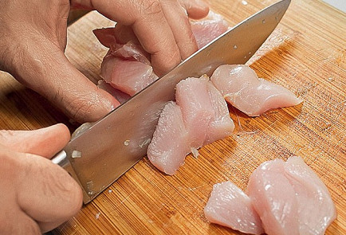

Оякодон — разновидность традиционного японского блюда донбури,
представляющего собой круглую чашу с рисом, дополненную различными
ингредиентами, от куска свинины или говядины до угря. Если верить
источникам, оякодон придумали в Осаке около 1900 года, бросив на рис кусочки
курицы с весенним луком и залив их яйцом. Название блюда, к слову, буквально
означает на японском «мать и дитя». Кстати, готовить оякодон можно не только с курицей,
с говядиной тоже вкусно. И еще это не только завтрак — он может быть
и обедом, и ужином.
| Калорийность | Белки | Жиры | Углеводы |
|---|---|---|---|
| 1190 | 112,5 | 23,9 | 127,3 |
| ккал | грамм | грамм | грамм |
| Ингредиенты | Количество |
|---|---|
| Лук репчатый | 2 головки |
| Куриное филе | 600 г |
| Рис | 10 столовых ложек |
| Яйцо куриное | 6 штук |
| Соевый соус | 1 стакан |
| Сахар | 4 столовые ложки |
| Зеленый лук | 40г |
| 1. Репчатый лук очистить и нарезать тонкими полукольцами. На среднем огне разогреть сковороду и влить в нее шесть столовых ложек соевого соуса. | |
|---|---|
| 2. Как только соевый соус начнет кипеть, бросить в сковороду луковые полукольца и посыпать сверху сахаром. Готовить, периодически помешивая, две-три минуты. | |
|  | 3. Тем временем куриное филе нарезать небольшими кусочками — сильно измельчать мясо не нужно, готовые ломтики должны остаться сочными и плотными. |
| 4. Положить курицу в сковороду и перемешать с соусом. Когда мясо побелеет с одной стороны, перевернуть аккуратно ломтики и потушить еще пару минут. Куриное филе готовится удивительно быстро: максимум три- четыре минуты. | |
| 5. В отдельной миске вилкой или венчиком быстро взбить яйца в однородную смесь. Добавлять соль при этом не нужно — соевый соус, в котором тушится мясо, и так достаточно солон. | |
| 6. Вылить яичную смесь на сковороду, стараясь равномерно покрыть все мясо. Накрыть сковороду крышкой и готовить омлет три-четыре минуты, не мешая, пока яйца как следует не схватятся. | |
| 7. Зеленый лук измельчить. На сервировочную тарелку выложить горкой теплый рис, сваренный на пару. | |
| 8. Сверху на рис аккуратно выложить омлет — для удобства его можно разделить лопаткой на треугольные сегменты. Посыпать оякодон измельченным зеленым луком — и подавать горячим. |
К вопросу о сервировке оякодона. Для оякодона используется глубокая большая пиала. На дно
выкладывается рис, закрывая собой чуть более половины. Сверху сплошным куском выкладывается омлет.
В идеале лучше всего использовать сковороду таким же диаметром, как и пиала. Но у меня такой нет,
поэтому просто выкладываю омлет кусками, а не цельным кругом. Дополнительно оякодон можно
посыпать свежей зеленью. Не забываем поставить на стол соевый соус и чайник с горячим чаем. Палочки
или вилку используйте, исходя из ваших убеждений.
| Калорийность | Белки | Жиры | Углеводы |
|---|---|---|---|
| 516 | 60,9 | 14,7 | 34,7 |
| ккал | грамм | грамм | грамм |
| Ингредиенты | Количество |
|---|---|
| Длиннозерный рис | 1,5столовые ложки |
| Кальмары | 116г |
| Лук репчатый | ½ головки |
| Морковь | ½ штуки |
| Молотый кумин (зира) | по вкусу |
| Молотый кориандр | по вкусу |
| Куркума | по вкусу |
| Базилик | по вкусу |
| Томатная паста | по вкусу |
| Соль | по вкусу |
| Растительное масло | 1,5чайные ложки |
| Калорийность | Белки | Жиры | Углеводы |
|---|---|---|---|
| 965 | 28,2 | 41,8 | 121,1 |
| ккал | грамм | грамм | грамм |
| Ингредиенты | Количество |
|---|---|
| Рис | 5,5 столовые ложки |
| Растительное масло | 2 чайные ложки |
| Чеснок | 1 зубчик |
| Говяжье филе | 75г |
| Стручковый зеленый горошек | по вкусу |
| Зеленый лук | 2 стебля |
| Свежий красный перец | ½ штуки |
| Мини кукуруза | 4 штуки |
| Грибы шиитаке | 3 штуки |
| Рисовое сладкое вино | 1 чайная ложка |
| Соль | щепотка |
| Сахар | по вкусу |
| Легкий соевый соус | 2 чайные ложки |
| Кунжутное масло | по вкусу |
| Сладкий соус чили | 1,5 столовые ложки |
| Устричный соус | по вкусу |
| Кукурузная мука | по вкусу |